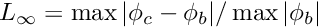
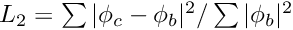
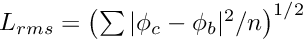
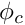
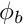
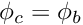

nbi-solve-laplace takes an input geometry and matrices generated by nbi-assemble-laplace and solves the boundary integral problem for specified boundary conditions. The problem can be solved using a built-in GMRES iterative solver, or a solver from the PETSc library, if support is available.
nbi-solve-laplace -h
gives a current list of command line options. The most important are:
-gthe geometry file name (this must be set);-mmatrix file name (this must be set);-bname of file containing boundary condition (this must be set)-Blists built-in functions for evaluating boundary conditions;-fuse the Fast Multipole Method (strongly recommended for all but the smallest problems);-terror tolerance for iterative solver;-Puse a PETSc solver if available;-Kname of file containing PETSc solver settings;-sname of output file for solution.
The output file contains data in a format which can be read by nbi-process or read using the nbidata function in the .../octave directory.
On completion, the solver reports the number of iterations used and the residual error in the solution. It also reports three error norms: ,  and , where  is the computed surface potential,  is the surface potential supplied as part of the boundary condition, and  is the number of nodes.
is the number of nodes.
These error norms are useful for checking that a problem has been properly set up and discretized, and for assessing the accuracy to be expected from the solver. If the input boundary condition is that due to a source which lies completely inside the surface, the result should be . The difference between the input and computed potentials is thus a measure of the accuracy of the numerical solution. If the boundary condition is not that due to an internal source, these error norms can be ignored.